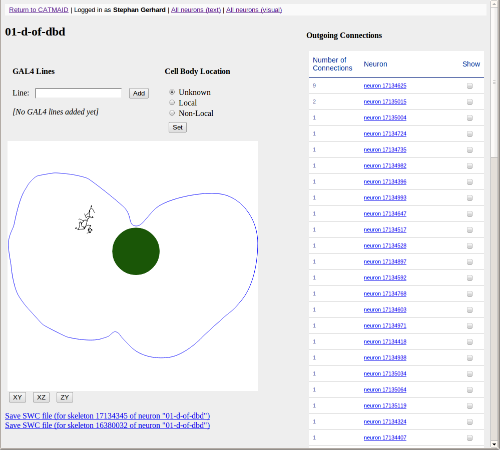

Screenshots¶
The CATMAID User Interface with skeleton annnotations and tags

The Object Tree for semantic annotations

The Skeleton Node and Connector Table

WebGL Neuronal Morphology Viewer

Neuron Catalog

Selector tool: Mirrored mouse cursor in all open stacks